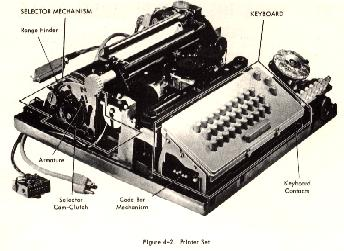
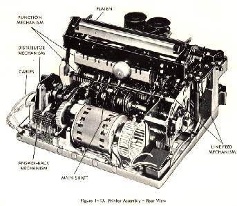

TELETYPE
MODEL 32ASR.
In October 1964, Dr. Jim Marsters of Pasadena purchased a new 32ASR from
Teletype. As he was going to be away from Pasadena when it arrived, he asked
that it be shipped to my home.
Some information on the Model 32 has been printed in prior issues of RTTY,
and several amateurs have purchased used 32KSR, from various sources and are now
operating them on the air. Of all the various models of teletypes and other
teleprinters in use on amateur frequencies, no one unit offers all the features
found in the 32ASR.
The dimensions and weight is as follows: width 22 inches, depth l8 1/2
inches, height 8 3/8 inches and weight approximately 44 lbs. The stand adds an
additional 24 1/2 inches in height and 12 lbs. the 32ASR is an attractive unit,
modern in design, and finished to match most of the current amateur radio
equipment.
The 32ASR was shipped in a strong cardboard carton, well packed to assure
safe arrival. A very clear set of instructions as to how to unpack and assemble
was found on the top-side of the carton.
The 32A5R (Automatic Send-Receive set) provides facilities for transmission,
or for the reading of perforated tape. It also provides facilities for page
copy, either from the local loop or from your TU. To state it another way, the
32ASR may be used in the following manner:
- Transmit from the keyboard while making printed page copy and either
perforating tape or not perforating tape.
- Receive page copy, and also either perforating tape or not perforating
tape.
- Perforate tape from the keyboard while making page copy.
- Transmit from tape reader while obtaining page copy. Use the "here is"
key for automatic RTTY identification. 22 characters are available for
coding, by breaking off the plastic tines on the code drum.
The 32 printer is quite different from earlier teletype printers. The basic
printer consists of the following major components: (A) keyboard, (B) printer
assembly, (C) motor, (D) sub-base, (E) cover. For TWX and other commercial
services an additional unit is offered, a call control assembly. This latter
unit is not necessary for amateur RTTY operations. The keyboard and printer
assembly are mounted on the sub-base. The motor is a two pole single phase sync
motor operating at 3600 RPM. It has two internal fans and one external fan, to
provide cooling. Nylon gears and a flexible belt provide very quiet operations.
The keyboard layout is similar to the 14, 15, 19, and 26. No blank key is
provided. The keyboard code bars operate a set of wire contacts which are
connected to a printed circuit distributor, which is mounted on the printer
assembly. This same P C distributor also generates the start stop code from the
tape reader and the "here is" key. Low values of distortion were observed when
tested with a DTX "test set." Two additional keys are to the right of the usual
keys, one a break key which opens the keyboard circuit, and the other is a
repeat key, which will allow any normal key to be repeated when it is operated
prior to the normal key.
 One
of the features which seems to make for the quieter operation is the small type
wheel and ribbon assembly. The type-wheel is rotationally and vertically
positioned to select the proper character, and a small hammer drives the
type-wheel and the ribbon against the paper to effect printing. Automatic
carriage return and line feed occur after the 72nd character. Un-shift on space
is also built in. The selector magnet takes 500 mills at 20 volts, which is
provided by a printed circuit card called a selector magnet driver. Its input
can be wired for either 20 or 60 mils (normal TU outputs) by changing a strap on
the rear terminal strip. A power supply for the P C card is mounted to the right
side of the printer assembly, under the cover. Another DC supply is provided
which mounts under the printer inside of the base stand.
The type reader (TD) is operated electrically, rather than mechanically as
are the 14 TDs and the FRXD and MDX units. It utilizes the P C distributor
(which is also used for the keyboard) to generate the five unit start stop code
from the perforations in the tape. A tight tape and tape out switch are included
in its design. Also the switch to start the reader has a "stop-free" position,
and a center position which holds the tape fixed without advancing it. And a
start position. It is a very quiet operating unit.
The tape punch (Reperforator) is mounted to the left of the printer assembly
on the sub-base. The printer selector and code bars also operate the perf/punch
unit. A chad box is slid under 'the left hand side of the printer next to the
mounting stand. The tape perforation is chad. In other words a completely
perforated hole for a mark inpulse. 
On the 32ASR tested, no call controller was included, hut the
space which would normally be used for this function, mounted the
power supply unit and the various connectors to connect the
various units of the 32 electrically together. Access to the
"here is" code drum is from the rear next to the power
unit. Coding is done by breaking small plastic ridges off for
each marking code. Small wire contact springs are used to read
the marking or spacing code on this drum. A clear simple unit and
should be service free.
During the week which I have operated this 32ASR (along with
my own 28ASR), I have found the 32ASR to he an excellent teletype
unit, for amateur RTTY operation. The space required to place it
in a crowded den, made a good impression on my wife. The keyboard
has somewhat the feel of an electric typewriter rather than the
15 or 19 keyboard, and is easy to use. The "here is"
key was coded for "DE W6AEE CW K" and is of real use on
the air. The paper holding feature is simple and very effective.
The tape for the perforator also is simple and easy to use. There
are four keys on the punch unit, on and off, a hack space to
permit corrections to tape as you punch it, and a tape tension
release when starting new tape in the punch. Loading paper is
easy, drop the small center plastic rod through the center and
bring the paper up from under the roll, over the spring loaded
paper straightener, under a new style paper guide and you are
ready to print.
Teletype Corporation cautions in its 32/33 manual, "They
are designed for light duty service in applications where
operations are not expected to exceed two hours per day."
Several of the well known RTTY operators are now using 32KSR
which they purchased used and have had little or no service
problems.
For those amateurs desiring a single unit offering all of the
modes of operations in a single unit, should seriously consider
the 32ASR. Price wise, it is in the same range as a good modern
receiver or a 100 watt CW/SSB transmitter.
|